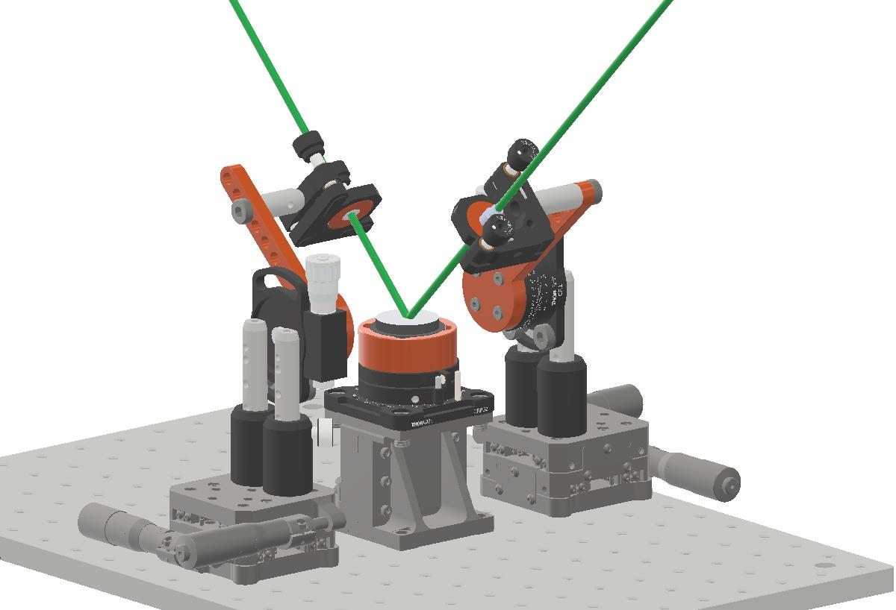

Contributions & Results
Temperature-Gradient Optical Trapping Cell


Cell modification
Problem: Absence of contact between parts of the cell.
Limitation of the vertical working range due to the optical lenses coming into contact with window mounts.
Solution: Changing an internal air channel to improve the contact between parts of the cell.
Relocating window mounts to increase the vertical working range from 19 to 25 mm, while maintaining the same cell height
Prepared detailed manufacturing drawings for the mechanical workshop.
Aerosol Stability
Problem: Incoming humid airflow disturbed the trapped aerosol.
Solution: 3D-printed airflow diffuser with lateral outlets that redirected incoming humid air laterally rather than directly toward the trapped aerosol.
Frost Prevention
Problem: Frost formation outside of the lower cold part of the cell and optical windows.
Solution: Custom 3D-printed protective components to thermally shield the cold lower section of the cell and an external dry-air distribution system for windows.


Custom-Built Optical Goniometer

Optical and Mechanical Configuration
Adapted a published goniometer concept into a practical experimental setup.
Developed the mechanical layout and component arrangement.
Component Selection and Integration
Selected commercially available optomechanical components.
Combined standard components with custom-designed, 3D-printed parts.
3D Modeling and Prototyping
Designed custom components required for mechanical integration.